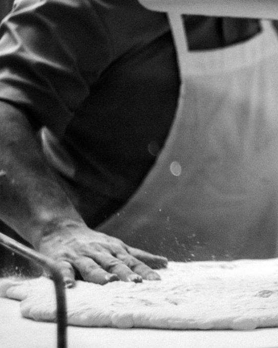
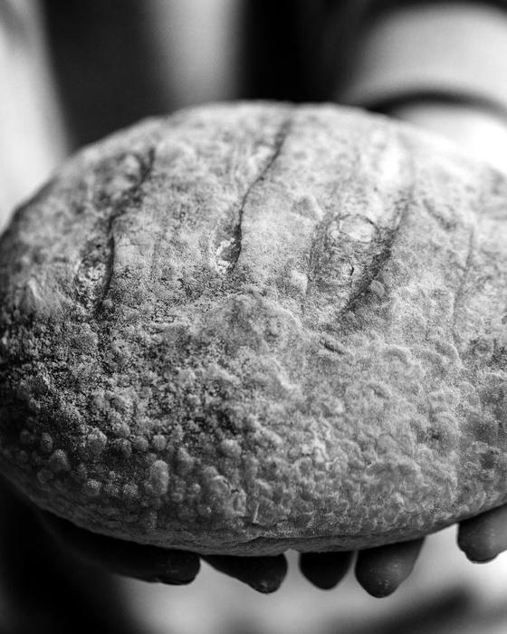
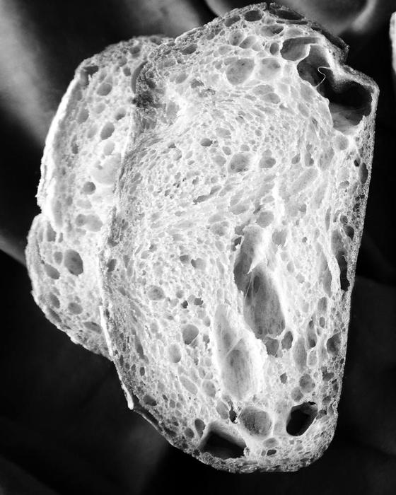

A test page for the images that fray and smear card. The strip is one picture made of the three photographs; the threads and the lens are one pass over it. Without the canvas the three photographs stand in a row.
The week's breads pass by on a strip that comes apart into threads where it leaves the frame and is woven again where it comes in. A lens goes over them and smears what it crosses.



A test page for the images that fray and smear card. The strip is one picture made of the three photographs; the threads and the lens are one pass over it. Without the canvas the three photographs stand in a row.